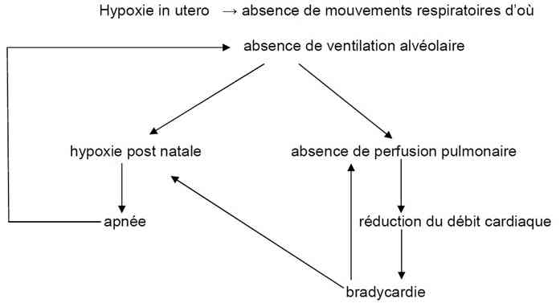

Bienvenue Sur Medical Education
Accouchement inopiné hors maternité
Spécialité : gynecologie / pédiatrie /
Points importants
- 0,5% des naissances en France (4 000/an)
- 44 % des bébés sont nés avant l'arrivée du SMUR
- Prise en charge conjointe de la mère et de l'enfant
- 10% des nouveau-nés ont besoin d'une assistance à l'adaptation à la vie extra-utérine
-
Situations à risque :
- prématurité
- retard de croissance intra-utérin (RCIU)
- jumeaux
- siège
- métrorragies
- fièvre maternelle
-
Evaluation à la première minute de vie : 3 éléments essentiels :
- respiration
- FC
- tonus
- Anticiper, évaluer, traiter, réévaluer
- Succession de gestes coordonnés dans le respect des règles d'asepsie
- Matériel spécifique au nouveau-né
- Priorité à la ventilation
- Attention à l'oxygène
- Prévenir l'hypothermie
- Ne pas oublier le certificat d'accouchement
Traitement
LE BEBE N'EST PAS NE
Préparation du matériel nécessaire
- A proximité de la mère (unité de lieu pour l'équipe)
-
Zone ergonomique et adaptée :
- table à hauteur d'homme, accessibilité à la tête
- zone éclairée, chauffée
-
Matériel à disposition :
- serviettes chaudes, champs, bonnet, sac en polyéthylène
- matériel d'aspiration prêt (réglage < 150 cm H2O)
- appareil de mesure de la SpO2 adapté avec capteurs néonataux Massimo SET™
- BAVU néonatal (500 mL) relié à l'oxygène (prudence avec l'oxygène)
-
sac pédiatrique :
- _182 Photo Set d'intubation
- chronomètre
- clamp de Barr
- sondes d'aspiration 6, 8 et 10
- laryngoscope avec lames droites Miller 0 et Miller 1 ou Oxford
- pince de Magill
- sparadrap tissé pour moustaches
- sondes d'intubation 2.5, 3 et 3.5 sans ballonnet
- sonde ou masque de N-CPAP
- sondes gastriques ch 6 et 8
- cathlons 24 G
- Stéristrip®
- Tegaderm®
- G 10% et sérum physiologique
- adrénaline (1 mL = 1 mg)
- seringues de 5, 10, et 50 mL
- robinet à 3 voies
- prolongateurs courts et longs
- set à cathéter veineux ombilical (KTVO)
- bétadine (cordon)
- biseptine (perfusion périphérique ou KTVO)
-
Parfois : matériels de renfort :
- incubateur de transport (si hypothermie, prématurité, détresse vitale, grande distance)
- respirateurs néonataux adaptés : découpeurs de flux [ex : Babylog 8000® (Dräger) avec onduleur et batteries, Fabian@ (Sebac), Babypac® (Médipréma)]
Anamnèse
- Age gestationnel, grossesse unique ou non
- Déroulement de la grossesse
- Contexte infectieux (fièvre, rupture de la poche des eaux > 12h, liquide teinté)
- Couleur du liquide
- Mouvements actifs
- Médicaments
Appel anténatal au SMUR pédiatrique
- Prématurité
- Grossesse gémellaire
- Risques infectieux : fièvre maternelle > 38°C
- Métrorragies
- Liquide méconial surtout si asphyxie périnatale (anomalie des BDC foetaux)
- Siège
Après l'accouchement : gestes systématiques et rôle bien défini pour chaque membre de l'équipe
- Limitation des différences de hauteur mère/nouveau-né
- Clampage, désinfection (bétadine), section et soins du cordon
- Laisser 5 cm de cordon
- Vérifier 2 artères et 1 veine ombilicale (association artère ombilicale unique et malformations rénales, cardiaques)
Evaluation du nouveau-né
-
3 éléments essentiels à la première minute de vie :
- qualité et efficacité des mouvements respiratoires spontanés
- fréquence cardiaque (auscultation cardiaque, perception des battements artériels au niveau du cordon ombilical, pouls de l'oxymètre)
- tonus
- Le score d'Apgar à M1, M3, M5, M10 apprécie l'adaptation à la vie extra-utérine mais n'est plus considéré comme élément de base pour décider de la conduite de la réanimation
-
La couleur mal appréciée en dehors de cyanose généralisée franche et paleur extrême ne guide plus la conduite à tenir
-
SpO2 précoce : Massimo SET™ à la main droite (position sus-ductale), va guider en fonction du temps la titration d’O2 si besoin
En pratique : 3 situations
-
L'enfant, à terme, né dans un liquide clair, va bien (score d'Apgar > 7) : 90% des cas :
- l'essuyer, le sécher, le placer en PLS sur le ventre de la mère ; examen plus tard
- l'aspiration des voies aériennes supérieures n'est plus systématique
- la perméabilité oesophagienne (recherche d'atrésie de l'oesophage) est différée. Risque de bradycardie réflexe si effectuée dans les 10 premières minutes de vie
-
L'enfant naît dans un état intermédiaire (score d'Apgar entre 4 et 7) : 10% des cas, besoin d'une assistance :
- essuyer, sécher, stimuler, mettre le bonnet et le sac en polyéthylène
-
libérer les voies aériennes (position neutre pas d'hyperextension)
-
 _183
Tête en position neutre
_183
Tête en position neutre
-
- aspiration douce < 150 cm H2O et brève : bouche, narines
-
oxygénothérapie monitorée et adaptée à la SpO2 :
- attention à la toxicité de l'hyperoxie (rôle néfaste des radicaux libres sur le poumon, la rétine, le cerveau)
- SpO2 normale environ à 90-95% dans les 10 premières minutes, à M3 : 70%, à M5 : 985%, à M10 : 95%, mais O2 nécessaire si réelle hypoxie
-
L'enfant va mal : 1% des cas : inerte, cyanosé ou pâle, mouvements respiratoires absents ou inefficaces, FC < 100 bpm, à l'extrême : «état de mort apparente» ou Apgar < 3 :
- séchage, stimulation, tête en position neutre, aspiration naso-oropharyngée, prévention de l'hypothermie (sac, bonnet)
-
ventilation manuelle au masque à M1 (sauf contre-indications : liquide méconial ou hernie diaphragmatique => intubation d'emblée) :
-
Neopuff™ (Fisher et Paykel) ou ballon auto-remplissage (500 mL) sans tuyau d'enrichissement en O2 (FiO2 environ 60%)
-
 _184
Photo
Neopuff
_184
Photo
Neopuff
-
- masque circulaire avec bourrelet (taille 0 ou 1) de taille appropriée et sans fuite
- commencer à ventiler à l'air, position tête neutre
- puis débit O2 = 5 à 6 mL/min
- fréquence 40/min
- parfois bloquer la valve de surpression transitoirement (2 à 3 insufflations quand le thorax ne s'est pas soulevé à la première). Attention, pas avec les nouvelles valves tarées à 45 cmH2O (normes européennes)
-
Neopuff™ (Fisher et Paykel) ou ballon auto-remplissage (500 mL) sans tuyau d'enrichissement en O2 (FiO2 environ 60%)
-
intubation endotrachéale à M3 si ventilation au masque inefficace, prolongée ou dès M1 si contre-indiquée :
- nasotrachéale si opérateur expérimenté
- orotrachéale si moins expérimenté : plus facile mais sécurisation pour fixation moins fiable
- lames droites, pas d'hyperextension, glotte en position haute et antérieure, s'aider de la pince de Magill si intubation nasotrachéale
-
diamètre de sonde d'intubation selon le poids de naissance (PN) :
- PN < 2,5 kg : diamètre de SIT 2,5
- PN 2,5 à 4 kg : diamètre de SIT 3
- PN > 4 kg : diamètre de SIT 3,5
- repère à la narine : poids (kg) + 7 cm si nasotrachéale
- repère à la bouche : poids (kg) + 6 cm si orotrachéale (moins fiable)
- vérification d'une auscultation symétrique
- attention à l'intubation sélective ou à l'extubation accidentelle
- fixation par moustache adhésive
- ventilation manuelle ou mécanique sur tube
- priorité à la ventilation (80% des nouveau-nés en état de mort apparente répondent à la ventilation en pression positive)
-
MCE si FC < 60 bpm et ventilation correcte d'au moins 30 secondes :
-
technique : méthode la plus efficace : 2 pouces encerclant le thorax, pouces médians sur le tiers inférieur du sternum adjacents ou superposés
- _185 Massage cardiaque externe du nouveau-né
- rythme 120/min indépendant de la ventilation si patient intubé
- si échec d'intubation : alternance 3 MCE pour une ventilation
- MCE poursuivi tant que le rythme spontané n'est pas > 60/min
-
technique : méthode la plus efficace : 2 pouces encerclant le thorax, pouces médians sur le tiers inférieur du sternum adjacents ou superposés
-
adrénaline si FC < 60 bpm malgré une ventilation correcte, une FiO2 montée à 100% (manchon réservoir) et MCE :
- IT : 350 µg/kg (diluer 1 mL = 1 mg + 9 mL de NaCl 0,9% et prendre 0,3 mL/kg de la solution diluée) par l'intermédiaire d'une sonde d'aspiration trachéale. Si inefficace passer à 100 µg /kg en l'absence de voie IV
- IV (plus efficace mais moins rapide) : 10 à 30 µg /kg par la mise en place d'un KTVO en position sous hépatique (au premier repère, à 5 cm) n'injecter qu'après avoir eu un reflux
- efficacité jugée sur la FC qui doit être > 100/min dans les 30 secondes de l'injection
- expansion volémique : indication saignement aigu avec signe d'hypovolémie, NaCl 0,9% = 10 à 20 mL/kg en 5 à 10 min IV lente poussée à la main
En l'absence de résultat, les gestes de réanimation sont arrêtés au bout de 20 minutes
Tout nouveau-né ayant besoin d'une ventilation en pression positive devra être surveillé et monitoré en unité de soins intensifs
Mesures particulières
-
Liquide amniotique méconial (anoxie périnatale, post-maturité) :
- l'aspiration avant dégagement des épaules (à la vulve) n'est plus recommandée
- aspiration buccopharyngée et des narines soigneuses si FC > 100 bpm, bon tonus et bonne réactivité, puis surveillance
-
aspiration trachéobronchique, après intubation endotrachéale, effectuée que si score d'Apgar < 3 (FC < 100/min, hypotonie et hyporéactivité) ou si détresse respiratoire rapidement présente
- ventilation au masque formellement contre-indiquée
- aspirations endotrachéales poursuivies tant que productives
- nouveau-né transféré intubé en réanimation néonatale afin de poursuivre aspirations et kinésithérapie
-
Prévenir l'hypothermie :
- augmenter la température ambiante : modifier le chauffage de l'habitation, utiliser un chauffage d'appoint ou un sèche-cheveux (dirigé vers le plafond)
- essuyer l'enfant (corps et plus particulièrement tête) avec un linge stérile, sec et chaud et le mettre d'emblée dans un sac en polyéthylène avec un bonnet en jersey, surtout si prématuré
- limiter l'examen clinique ; un nouveau-né à 24°C voit sa température chuter de 0,25°C/min ; à M15 : 33°C et son métabolisme basal x 2 => hypoglycémie
- contact peau à peau avec la mère : excellent moyen de réchauffement ; peau à peau en PLS
-
Rechercher une hypoglycémie :
- glycémie < 2,2 mmol/L chez le nouveau-né à terme
- la corriger : glucosé 10% par voie buccale à la seringue si nouveau-né d'AG > 34 SA sans détresse sinon par sonde gastrique
- si glycémie < 0,6 mm/L => perfusion périphérique cathlon 24 G, 3mL/kg/h, B55 ou compensal G10% ou polyonique G10%
-
Détresse respiratoire :
-
signes apparaissent ± rapidement :
- tachypnée > 50/min
- geignement expiratoire
- creusement
- balancement thoraco-abdominal
-
conduite à tenir :
- évaluation de la gravité : score de Silverman
-
traitement symptomatique :
- score de Silverman < 4 et 85% > SpO2 > 90% : O2 queue de rat dun BAVU ou O2 lunettes nasales pour nouveau-né : 0,5 à 1 L/min ou N-CPAP (sonde nasale n°3 si P > 2 kg ou interface) et respirateur en mode VSPEP avec PEP = + 4 cmH2O
- score de Silverman > 4 avec FR > 60/min et SpO2 < 85%, intubation, ventilation assistée
- recherche d'une étiologie : maladie des membranes hyalines, infection maternofoetale, retard de résorption, malformation
-
signes apparaissent ± rapidement :
-
Détresse hémodynamique :
- situation rare comme mécanisme primitif (choc infectieux, anémie aiguë, cardiopathie)
-
signes :
- hypo perfusion périphérique : TRC > 3 sec, marbrures, teint gris ou pâle
- chute tensionnelle (PA moyenne < âge gestationnel)
- anomalie du rythme cardiaque
-
conduite à tenir :
- voie d'abord périphérique
-
traitement selon l'étiologie :
- suspicion d'infection maternofoetale : remplissage au NaCl 0,9% 10 mL/kg et antibiothérapie amoxicilline 50 mg/kg IV et cefotaxime 50 mg/kg IV
- anémie aiguë : remplissage 10 à 20 mL/kg en attendant culot O¯ CMV¯
-
Cyanose isolée :
- diagnostic différentiel polyglobulie où SpO2 normale
- test d'hyperoxie : sous 100% d'O2 la SpO2 n'augmente pas ; évoquer cardiopathie cyanogène ; la plus fréquente : transposition des gros vaisseaux ; transfert en cardiologie pédiatrique pour échocardiographie diagnostique
-
Ethique et limite de la viabilité :
- viabilité du législateur 22 SA et 500g
- viabilité maternité de type III 24 SA
- en extrahospitalier très mauvais pronostic avant 26 SA
LE BEBE EST DEJA NE
- A-t-il crié immédiatement ?
-
La ventilation est-elle efficace ? couleur rose + soulèvement thoracique efficace +/- cris :
- FR régulière = 50/min
-
A-t-il une détresse respiratoire ? :
- signes de lutte : score de Silverman
- cyanose +/- SpO2 < 90%
- geignement
-
FC > 100 bpm et stable ? :
- en cas de détresse se reporter aux chapitres correspondants de mesures particulières
DOCUMENTS A REMPLIR PAR LE SMUR
- Dossier médical SMUR : 1 pour l'enfant, 1 pour la mère
- Certificat d'accouchement daté et signé à en tête du SMUR avec identité de la mère, date, heure, commune de l'accouchement, sexe et prénom de l'enfant, terme
- En cas de décès : procédure écrite
_186 Tableau Procédure en cas de décès néonatal : âge sup. ou égal à 22 SA ou sup. ou égal à 500 g (viable)
 _187
Tableau
Procédure en cas de décès néonatal : âge inf. à 22 SA ou inf. 500 g (viable)
_187
Tableau
Procédure en cas de décès néonatal : âge inf. à 22 SA ou inf. 500 g (viable)
Devenir / orientation
- Transporter la mère et l'enfant de préférence dans la maternité où est suivie la mère
- Transfert en réanimation néonatale si besoin d'assistance à l'adaptation à la vie extra utérine, si possible même établissement pour la mère et l'enfant
-
Appel du SMUR pédiatrique :
-
indications avant la naissance :
- grande prématurité (AG < 33 SA)
- grossesse gémellaire
- siège
- risque infectieux : fièvre maternelle > 38°C
- métrorragies
- liquide amniotique méconial
-
indications pour un bébé déjà né :
- état de mort apparente
- détresse vitale respiratoire/hémodynamique
- anoxie périnatale (liquide méconial)
- prématurité = 35 SA
- poids = 2 kg
- malformations
- hypoglycémie et /ou hypothermie sévère et non résolutives
- ± selon lieu, contexte, saison
-
indications avant la naissance :
Mécanisme / description
ADAPTATION A LA VIE EXTRA-UTERINE
Physiologie foetale
-
Circulation foetale :
- deux shunts entre la circulation pulmonaire et la circulation systémique (foramen ovale et canal artériel)
- débit sanguin pulmonaire faible car résistances vasculaires pulmonaires élevées
- SpO2 < 60%
-
Développement pulmonaire :
- 3e semaine de gestation => 2 ans de vie
- 24 SA : apparition des alvéoles
- surfactant fonctionnel 35-36 SA
- liquide pulmonaire
Adaptation à la vie extra-utérine
- Expansion pulmonaire et établissement d'une CRF
-
Catécholamines en début de travail :
- activation des pompes à sodium => résorption de liquide alvéolaire
- sécrétion de surfactant
- Baisse des résistances vasculaires pulmonaires
- Clampage du cordon => augmentation des résistances vasculaires systémiques => P cavités gauches > P cavités droites => fermeture des shunts
NON ADAPTATION A LA NAISSANCE
 _188 Algorithme Hypoxie in utero
REANIMATION A LA NAISSANCE
_189 Algorithme Réanimation à la naissance
Algorithme
- Algorithme de prise en charge du nouveau-né à la naissance d’après l’ILCOR 2010
 _825
Algorithme
Algorithme : prise en charge du nouveau-né à la naissance
_825
Algorithme
Algorithme : prise en charge du nouveau-né à la naissance
Bibliographie
- AHA guideliness for CPR and ECC of pediatric and neonatal patients: pediatric basic life support pediatrics 2006; 117(5) e 989-1004
-
Richmond, S. and Wyllie, J. European Resuscitation Council Guidelines for Resuscitation 2010 Section 7. Resuscitation of babies at birth. Resuscitation. 81(10): 1389-99
-
Jerry P. Nolan and all, J. European Resuscitation Council Guidelines for Resuscitation 2010. Resuscitation 81 (2010): 1222 et 1251-4
- The International Liaison Commitee on Resuscitation (ILCOR). Consensus on Science with Treatment Recommendations for Pediatric and Neonatal patients: Neonatal Resuscitation. Pediatrics 2006; 117; 978-88
- Halliday HL. Endotracheal intubation at birth prevention of mortality and morbidity in vigorous, meconium stained infants born at term. Cochrane Database System Rev 2001(1): CD000500
- Kamlin CO, O'Donnel CP, Davis PG et al. Oxygen saturation in healthy infants immediatly after birth. J Pediatr 2006; 148(5) 585-9
- Lavaud J, Ayachi A, Chabernaud JL, Lodé N. Réanimation et transport pédiatriques 5ième édition Masson Paris 2004
- Lenclen R, Mazraani M, Jugie M et al : utilisation d'un sac en polyéthylène : un moyen d'améliorer l'environnement thermique du prématuré en salle de naissance. Arch Pediatr 2002 ; 9 : 238-44
- SAMU-SMUR et Périnatalité. Journées scientifiques de SAMU de France 2003. SFEM, 22 rue du Château des Rentiers, 75013 Paris
- Saugstad OD. The role of oxygen in neonatal resuscitation. Clin Perinatal. 2004; 31(3): 431-43
- Sontheimer D, Fisher CB, Kerstin EB. Kangaroo transport instead of incubator transport. Pediatrics 2004; 113:92
- Vain NE, Szyld EG, Prudent LM et al. Oropharyngeal and nasopharyngeal suctioning of meconium -stained neonates before delivery of their shoulders: multicentre, randomised controlled trial. Lancet 2004 aug 14-20; 364 (9434): 597-602
Auteur(s) : Noëlla LODE